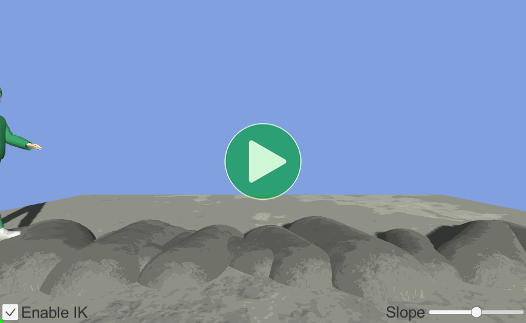

Location: Samples/09 Inverse Kinematics/02 Uneven Ground
Recommended After: Puppet
Learning Outcomes: in this sample you will learn:
How to adjust the height of a character's feet according to the terrain.
How to read the value of a custom
AnimationCurvefrom an animation.
Summary
This sample demonstrates how you can use Unity's Inverse Kinematics system to adjust the height of a character's feet according to the terrain they're walking over.
| IK Disabled | IK Enabled |
|---|---|
|  | |
| Without IK, the character is always walking as if on flat ground. While walking downhill it looks like they're planting their feet in the air and while walking uphill their feet go through the ground. | With IK, the character adjusts the positioning of their feet as necessary. While walking downhill they stretch out their feet a bit further and while walking uphill they plant their feet a bit higher up than usual. |
Overview
The IK control values used in this sample haven't been completely fine tuned, the point is simply to prove that IK works the same in Animancer as it does in Mecanim, with two notable differences:
- The way that IK is enabled (as explained in the IK Pass section).
- The way that the values of the IK Curves are accessed by the script (as explained in the Animated Properties section).
The general code structure is very simple, with the scripts being controlled by UI elements:
- A UI
Togglecontrols whether IK is currently being applied or not. - A UI
Slidercontrols the slope of the ground.
As with the Puppet sample, playing animations isn't the focus here so it just uses PlayAnimationOnEnable from the Quick Play sample.
{kind=link}
Obstacle Treadmill
The ObstacleTreadmill script creates a random series of objects and rearranges them each time the character moves far enough.
using System.Collections.Generic;
using UnityEngine;
public class ObstacleTreadmill : MonoBehaviour
{
Its fields use various Units Attributes to make the Inspector show what kind of units they're measured in:
| Code | Inspector |
|---|---|
|
On startup, it spawns a bunch of obstacles and adds them to a List:
private readonly List<Transform> Obstacles = new List<Transform>();
protected virtual void Awake()
{
for (int i = 0; i < _SpawnCount; i++)
{
Transform capsule = GameObject.CreatePrimitive(PrimitiveType.Capsule).transform;
capsule.GetComponent<Renderer>().sharedMaterial = _ObstacleMaterial;
capsule.parent = transform;
Obstacles.Add(capsule);
}
It also moves and rotates each of them randomly so the terrain is different every time:
ScrambleObjects();
}
private void ScrambleObjects()
{
for (int i = 0; i < Obstacles.Count; i++)
{
Transform obj = Obstacles[i];
obstacle.SetLocalPositionAndRotation(
new Vector3(
Random.Range(0, _Length),
0,
0),
Quaternion.Euler(
90,
Random.Range(-_RotationVariance, _RotationVariance),
0));
float size = _BaseScale + Random.Range(-_ScaleVariance, _ScaleVariance);
obstacle.localScale = Vector3.one * size;
}
}
Every FixedUpdate, it checks if the _Target (the character) has moved too far and if so, it randomizes the obstacles again and teleports them back:
protected virtual void FixedUpdate()
{
Vector3 position = _Target.position;
if (position.x < transform.position.x)
{
ScrambleObjects();
position.x += _Length;
// Adjust the height to make sure it's above the ground.
position.y += 5;
if (Physics.Raycast(position, Vector3.down, out RaycastHit raycastHit, 10))
position = raycastHit.point;
_Target.position = position;
}
}
It also exposes a public property for a UI Slider to control the Slope of the ground:
[SerializeField]
private Transform _Ground;
public float Slope
{
get => _Ground.localEulerAngles.z;
set => _Ground.localEulerAngles = new Vector3(0, 0, value);
}
}
IK Curves
Unlike the Puppet sample, this one doesn't want the character's feet to always be exactly at the target point. Instead, they should use the animation to lift their feet (0 IK weight) and start using the IK when their feet are actually supposed to be near the ground (1 IK weight). This sample uses a copy of the usual Walk animation with two additional AnimationCurves (LeftFootIK and RightFootIK) which determine how much weight we want the IK to have at any given point in the animation.
Rather than going fully to 0 weight, the curves used in this sample only go down to 0.2 so that the height the foot reaches when fully lifted up is still slightly influenced (20%) by the IK rather than being fully driven by the animation. The exact dimensions and shape of the curve would need to be adjusted to suit each animation and character in a real game.
Startup
The custom AnimationCurves can be accessed using Animancer's AnimatedFloat class which we initialize on startup:
private AnimatedFloat _FootWeights;
protected virtual void Awake()
{
_FootWeights = new AnimatedFloat(_Animancer, "LeftFootIK", "RightFootIK");
Then we access them below in OnAnimatorIK.
We also need to do a few other things on startup:
- Enable IK so that Unity will call
OnAnimatorIKand apply it to the character. Normally we could just setApplyAnimatorIKdirectly, but for this sample we want a UI Toggle to turn it on and off so we need apublicProperty for it to access:
public bool ApplyAnimatorIK
{
get => _Animancer.Layers[0].ApplyAnimatorIK;
set => _Animancer.Layers[0].ApplyAnimatorIK = value;
}
protected virtual void Awake()
{
...
ApplyAnimatorIK = true;
- Get the foot bones from the
Animatorand store them so we do not have to get them again every frame:
private Transform _LeftFoot;
private Transform _RightFoot;
protected virtual void Awake()
{
...
_LeftFoot = _Animancer.Animator.GetBoneTransform(HumanBodyBones.LeftFoot);
_RightFoot = _Animancer.Animator.GetBoneTransform(HumanBodyBones.RightFoot);
}
On Animator IK
In OnAnimatorIK it simply uses the AnimatedFloat to read the target curves at the current animation time (via _FootWeights[x]):
protected virtual void OnAnimatorIK(int layerIndex)
{
UpdateFootIK(
_LeftFoot,
AvatarIKGoal.LeftFoot,
_FootWeights[0],
_Animancer.Animator.leftFeetBottomHeight);
UpdateFootIK(
_RightFoot,
AvatarIKGoal.RightFoot,
_FootWeights[1],
_Animancer.Animator.rightFeetBottomHeight);
}
private void UpdateFootIK(
Transform footTransform,
AvatarIKGoal goal,
float weight,
float footBottomHeight)
{
Animator animator = _Animancer.Animator;
animator.SetIKPositionWeight(goal, weight);
animator.SetIKRotationWeight(goal, weight);
...
}
Raycasting
In order to find out where the ground actually is, we need to do some Raycasting. We use the footTransforms we retrieved on startup to determine where to start each ray with some additional fields to offset the origin above the current position and set the distance to go a bit lower than the original position. Starting too high would allow it to hit objects above the character's legs and allowing the distance to be too large would attempt to stretch their legs further than a person naturally would if the ground is too far away.
[SerializeField, Meters] private float _RaycastOriginY = 0.5f;
[SerializeField, Meters] private float _RaycastEndY = -0.2f;
private void UpdateFootIK(
Transform footTransform,
AvatarIKGoal goal,
float weight,
float footBottomHeight)
{
Animator animator = _Animancer.Animator;
animator.SetIKPositionWeight(goal, weight);
animator.SetIKRotationWeight(goal, weight);
if (weight == 0)
return;
Quaternion rotation = _Animancer.Animator.GetIKRotation(goal);
Vector3 localUp = rotation * Vector3.up;
Vector3 position = footTransform.position;
position += localUp * _RaycastOriginY;
float distance = _RaycastOriginY - _RaycastEndY;
Then we do a raycast downwards from that point. If it hits something, we use the RaycastHit.point and the footBottomHeight (the distance from the transform to the bottom of the foot model calculated by Unity) to determine the desired position for that foot and the RaycastHit.normal to determine the desired rotation:
if (Physics.Raycast(position, Vector3.down, out RaycastHit hit, distance))
{
position = hit.point;
position += localUp * footBottomHeight;
_Animancer.Animator.SetIKPosition(goal, position);
Vector3 rotationAxis = Vector3.Cross(localUp, hit.normal);
Vector3 angle = Vector3.Angle(localUp, hit.normal);
rotation = Quaternion.AngleAxis(angle, rotationAxis) * rotation;
_Animancer.Animator.SetIKRotation(goal, rotation);
}
Otherwise if nothing was hit, we simply stretch the leg out to the end of the ray:
else
{
position += localUp * (footBottomHeight - distance);
_Animancer.Animator.SetIKPosition(goal, position);
}
Conclusion
Now we have a character that looks slightly more realistic when walking on uneven ground and slopes:
| IK Disabled | IK Enabled |
|---|---|
As was mentioned at the start, this is a basic proof of concept which could be improved by using a better character controller, better animations, playing around with the shape of the IK curves, and trying different ways of determining where to raycast (you might even try using a raycast for the front and back of each foot for additional stability).